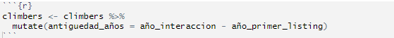

El set de daatos contiene información de clientes provenientes de distintas campañas o procesos de consulta inmobiliaria.
Cuenta con 24 variables y 2,076 observaciones, antes usadas para expediciones, ahora reinterpretadas como registros de clientes.
Algunas variables refieren a características del cliente (edad, género, nacionalidad, perfil), otras al proceso de consulta o decisión de compra (campaña, referidos, trimestre de búsqueda), y algunas a atributos del inmueble consultado, que deberán filtrarse o transformarse para el análisis.
La variable de interés es la compra o no del inmueble (success, renombrada a compra), es decir, queremos predecir un evento binario (1 = compra, 0 = no compra).
Por ello utilizaremos un modelo logístico, apropiado para modelar la probabilidad de ocurrencia de un suceso dicotómico.
Una compra exitosa se define cuando el cliente concreta la adquisición del inmueble consultado. En los datos originales esto se representaba con una igualdad de alturas; en el nuevo enfoque, equivale al momento en que el cliente pasa de la consulta a la transacción efectiva.
Tabla Descriptiva de las variables

Si queremos una tabla con medidas descriptivas de las variables, usamos
Estadisticos como el minimo, el primer cuartil, la mediana, la media, el tercer cuartil y el maximo para variables cuantitativas
La cantidad de TRUES y Totales con su porcentaje asociado haciendo el cociente entre TRUES y el Total para variable categoricas binarias

Análisis Descriptivo: Cartera de Activos Inmobiliarios y Perfil de Leads
Tenemos con un portafolio de activos inmobiliarios diferenciados (propiedad). Estas propiedades tienen una gran variabilidad en su tamaño o valor base (tam_propiedad), lo cual influye directamente en el interés máximo mostrado por el cliente (interes_max) durante el proceso de negociación.
La edad de los clientes potenciales muestra un rango amplio; sin embargo, el grueso de los interesados se concentra en un segmento de madurez financiera, con edades comprendidas principalmente entre los 29 y 43 años.
El análisis abarca un historial de interacciones comerciales (año_interaccion) desde 1978 hasta 2019, con un punto medio de actividad en el año 2002. Además, el modelo considera la trayectoria del activo en el mercado, usando el año de su primer listado o salida a la venta (año_primer_listing) como referencia de antigüedad.
Los datos muestran que 807 leads concretaron la operación de compra de un total de 2,076 interesados. Esto representa una tasa de conversión del 39%, lo que sirve para medir la eficacia del equipo de ventas.
Se observa que 507 de los 2,076 clientes optaron por servicios o características de alta gama. Veremos mas adelante si existe una correlación positiva entre la contratación de servicios premium y la probabilidad de cierre de la venta.
Las métricas relacionadas con la pérdida definitiva del cliente o incidentes graves durante la negociación presentan una frecuencia extremadamente baja (pocos valores TRUE). Debido a esta escasez de datos, las variables dependientes (como el motivo exacto de la pérdida o el punto del embudo donde ocurrió el incidente) presentan demasiados valores nulos (NA). Por lo tanto, se ha decidido excluir estas variables específicas del modelo predictivo para evitar ruidos estadísticos.
La variable que identifica si el cliente tomó la decisión de compra de forma totalmente independiente, sin asesores externos, solo cuenta con dos registros positivos. Dada su nula representatividad estadística, esta variable también ha sido descartada del análisis.
Para tener un dataframe más limpio y eficiente para el modelado predictivo, se eliminaron variables que no aportan valor estadístico o que presentan redundancia informativa. Las variables descartadas son:
- propiedad_id: Se eliminó para evitar la duplicidad de información, ya que el análisis se centrará en el nombre descriptivo del activo (propiedad), el cual ya funciona como identificador único para nuestros fines.
- decision_individual: Descartada debido a su nula variabilidad (solo dos registros positivos), lo que impide que el modelo aprenda patrones significativos sobre las compras sin asesores.
- Variables de Fricción Detallada (motivo_fallo, tam_fallo, tipo_incidente, tam_incidente): Estos campos, que describían la naturaleza exacta de una pérdida de cliente o un problema en la negociación, fueron descartados por la alta frecuencia de valores nulos (NA), derivada de la baja tasa de incidentes críticos en la muestra.
Tras este proceso de limpieza, el nuevo conjunto de datos queda conformado por 18 variables clave, optimizadas para identificar los factores que realmente impulsan la conversión inmobiliaria.

a

